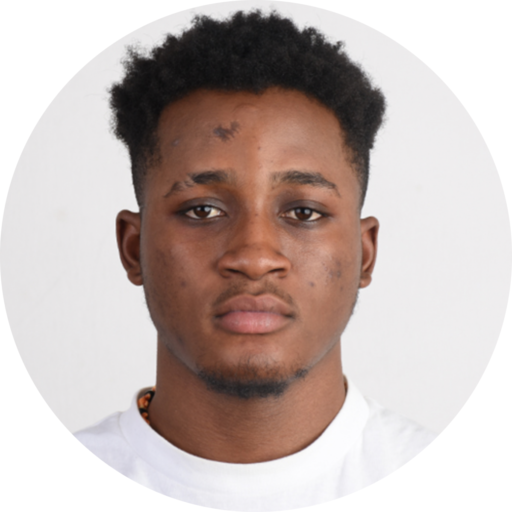

Adewole Adeoshun
Summary
Passionate about coding and problem-solving, with a focus on building real-world projects. Eager to learn, grow, and make meaningful contributions.
Education
-
Bachelor of Science in Computer Science
Queens College, City University of New York(CUNY)
Expected Graduation: May 2026
Experience
-
Software Engineering Intern
STEMKASA
New York
Feb. 2023 - Jul. 2023- Learned MongoDB, ExpressJS, React, NodeJS from design to deployment
- Built React-based subscription form, gaining 500+ subscribers weekly
- Created waitlist page with JavaScript to improve engagement
-
Software Engineering Fellow
Headstarter AI
New York
Feb. 2023 - Jul. 2023- Selected for a full-stack JavaScript program as one of 100 fellows out of 1000+ applicants
- Built a pantry tracker application using Next.js, Material UI, and Firebase for streamlined inventory tracking and management
- Developed two AI-based projects leveraging Next.js, OpenAI, and Stripe, while also exploring PHP and dynamic programming principles
Skills
Languages: Proficient Javascript(2yrs) • Python (2yrs) Intermediate C++ (1.5yrs) Beginner Java (1yrs) • PHP (1yrs)
Software: AWS • Git • MongoDB • React • NodeJS • Bash • Firebase • iOS
Projects
Pantry Tracking App | Headstarter AI (~20 hours) - Github
- Used Next.js, React, Material UI, and Firebase to build a pantry tracker application, delivering real-time inventory management, intuitive user interfaces, and seamless data synchronization for optimized pantry organization